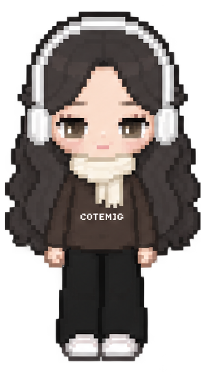
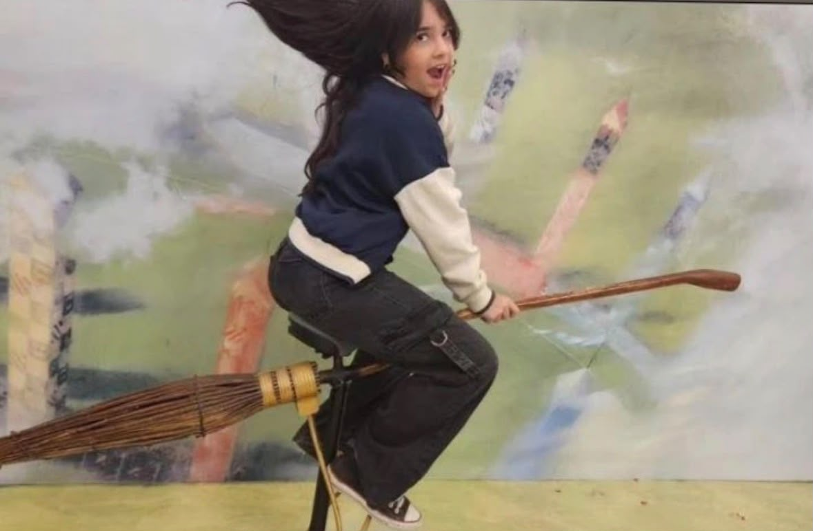

Projetos
Os maiores projetos

Descubra meus projetos criados, desde sites, sistemas e aplicativos, todos desenvolvidos com dedicação e atenção aos detalhes.


Os maiores projetos
Como está minha carreira atualmente.
Minhas habilidades e competências.
Conheça um pouco mais sobre mim.
Um espaço para testar ideias novas e projetos diferentes.
Alguns dos projetos que desenvolvi e que fazem parte da minha evolução na tecnologia.
Sites e interfaces criados para praticar desenvolvimento, design e experiência do usuário.
Este espaço pode receber novos projetos conforme meu portfólio crescer.
Um pouco sobre onde estou na minha jornada profissional e acadêmica.
Ensino médio integrado a uma formação técnica na área de tecnologia.
Desenvolvimento contínuo em programação, criação de sites e projetos práticos.
Continuar criando projetos e transformar conhecimento em experiência profissional.
Conhecimentos e competências que venho desenvolvendo.
Criação de páginas e interfaces.
Programação e desenvolvimento de projetos.
Lógica, projetos e resolução de problemas.
Foco em visual, organização e experiência.
Conheça a pessoa por trás dos projetos.
Sou uma pessoa curiosa, organizada e apaixonada por tecnologia. Gosto de transformar ideias em projetos visuais e funcionais e estou sempre buscando aprender algo novo.
Um cantinho do portfólio para mostrar ideias que ainda estão saindo do papel.
Uma área onde posso testar novas ideias de sites, interfaces e pequenos sistemas. A proposta é mostrar que nem todo projeto precisa estar perfeito para fazer parte da minha evolução.
Uma área reservada para colocar seus contatos, redes e links profissionais.